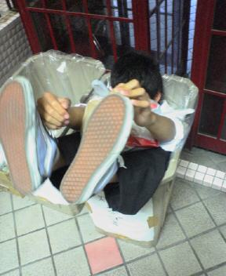

|
名前 西本 佳央でした | 担当楽器 トランペットのつもりです | ||
| 偽名 東本 桂央 | 出身校 岐阜県立大垣北高等学校 | |||
| 他称 ダメ人間 | 学部 一応理学部 | |||
| 好きな音 B♭またはF | 今年の目標 スイングしてみる | |||
| 一言 | ジャズは全くの初心者、トランペットも初心者に近いけれど頑張ります。 | |||
|
|
名前 南部 沙緒理 | 担当楽器 トロンボーン | ||
| 呼称：なんべ （高校時代に友だち、先輩、先生が ことごとくよみまちがえたため） |
学部：教育 | |||
| 特技：たこ焼きをまん丸に焼くこと | 弱点：機械関係全て 方向音痴 |
|||
| 最近の悩み： パソコンで名前を変換するのが めんどい |
好きなこと：休みの日の二度寝 | |||
| 一言 | よろしくおねがいしますっ！ | |||
|
|
名前 河合 奈津美 | 担当楽器 tb | ||
| 誕生日：8/30 血液型：A |
あだ名：なっちゃん | |||
| 住んでいる所：岐阜 | 体質：蚊にさされやすい | |||
| 学部：教育 | 髪質：硬・多・太 | |||
| 一言 | 「かわい」じゃなくて「かわあい」です。 | |||
|
|
名前 山道 友理 | 担当楽器 Tb | ||
| 呼称 やまみー | 誕生日 浜崎あゆみと同じ | |||
| 学部 法 | 出身 （吸収合併されて）富山市 | |||
| 好きなもの オムライス | 嫌いなもの 虫全て | |||
| 一言 | 「さんどう」じゃなくて「やまみち」です。 | |||
|
|
名前 小嶋 優美 | 担当楽器 トロンボーン | ||
| 誕生日：S60.2.22 | アダ名：ゆみ | |||
| 性格：消極的ハンター、B型 | 出身：石川→京都 | |||
| 出身部：吹奏楽（クラリネット） ラクロス部 |
好きなもの：三輪明宏 トロンボーン、良い匂い |
|||
| 一言 | ||||
|
|
名前 岩月 綾加 | 担当楽器 A Sax | ||
| 出身校：岐阜北高校 | 好きな場所：落ち着くところ | |||
| 嫌いな場所：落ち着かないところ | 誕生日：11月2日 | |||
| 星座：さそり | 嫌いな食べ物：特になし | |||
| 一言 | 早くジャズを吹けるようにがんばります！ | |||
|
|
名前 仲村 萌 | 担当楽器 テナーサックス | ||
| 出身校 岐阜北高校 | 好きな飲み物 ポンジュース | |||
| 嫌いな飲み物 紅茶 | 好きなくだもの グレープフルーツ | |||
| 嫌いなくだもの いちじく | 嫌いな野菜 トマト | |||
| 一言 | がんばります！！ | |||
|
|
名前 池田 あゆみ | 担当楽器 Pｆ | ||
| 呼称 いっけ | 好きな色 青 | |||
| 静岡生まれ | 途中から岐阜育ち | |||
| 悲しかったこと しっぽの抜けたリスを見たこと |
感動したこと そのしっぽが再生したこと |
|||
| 一言 | ジャズが弾けるように頑張ります。 | |||
|
|
名前 楠本 哲也 | 担当楽器 ピアノ | ||
| 呼称 てっちゃん（くっすー） | 誕生日 7月17日 | |||
| 学部 工 | 出身 広島 | |||
| 好きなもの 食べ物全部 | 嫌いなもの 食べれないもの | |||
| 一言 | ジャズ大好き！ | |||
|
|
名前 ざいま かずのり | 担当楽器 B | ||
| 学部 工・電情 | 血液の型 B | |||
| 出身 広島県 | 好きなキー B♭ | |||
| 性格 マイペース | 矯正視力 BB | |||
| 一言 | お酒に強くなりたいです(切実) | |||
| 名前 津田 弥奈美 | 担当楽器 Dr | |||
| 呼称：みなみ、タッチ、つだお、へめ | 出身校：桜台高校 | |||
| 人として大事なもの： マナーと思いやり |
好きなスナメリ：メリ夫 | |||
| 苦手な人数：３人以上 | 好きなチャンネル： スカパー２８４ |
|||
| 一言 | 今はただ、ジャズが好きになれるよう祈るばかりです。 | |||
|  | 名前 佐藤 裕典 | 担当楽器 Drs | ||
| 生まれ；豊臣秀吉と一緒 | 出身校；森本レオと一緒 | |||
| 性格；ＳをＭで隠す | 性格； １日２本のエメラルドマウンテン |
|||
| 性格；伸びきらない髪の毛 | My Foolish Heartの出だしが jazzをやるきっかけに |
|||
| 一言 | 早く横文字のあだ名がほしい | |||
|
|
名前 渡邉寛子 | 担当楽器 Tb | ||
| 誕生日：S62・8・2 | 血液型：O型 | |||
| 学校、学科： 名古屋工業大学 機械工学科 |
好きな言葉：てきとー | |||
| 楽器 YAMAHAのテナーバス |
マッピ： 新→バックの3G 球→YAMAHAの47L |
|||
| 一言 | がんばります！！ | |||
|
|
名前 松浦沙奈枝 | 担当楽器 Tb | ||
| 学部・学科： 理学部・化学化 |
出身校： 茨木高校 |
|||
| 誕生日がおなじ芸能人： 奥田民生、元モームス石黒 |
好きな食べ物：ひじき | |||
| 座右の銘： 笑う門には福来る。 |
||||
| 一言 | ボーンのジョナサン共々よろしくお願いします。 | |||
|
|
名前 吉川和宏 | 担当楽器 Tp | ||
| 出身高校： 茨木高校 |
好きなサッカープレイヤー： ドラガン・スナイコビッチ |
|||
| 名大工学部 | 機械・航空工学科 | |||
| 機械システム専攻 | 好きなサッカープレイヤー： ドゥンガ |
|||
| 一言 | フリューゲルホルンが欲しいです | |||
戻る | Homeに戻る